第一步：将tomcat的tar.gz包上传到服务器的/opt目录下，并解压
第二步：进入到解压之后的tomcat目录，并进入到bin目录下，运行startup.sh文件（可以通过bash startup.sh命令来运行）
第三步：检查防火墙是否开了tomcat的端口（假设为8080端口），如果没有开，则开启端口
可以通过service iptables status命令查看防火墙开了哪些端口，如果没有开到tomcat的端口，则要开启
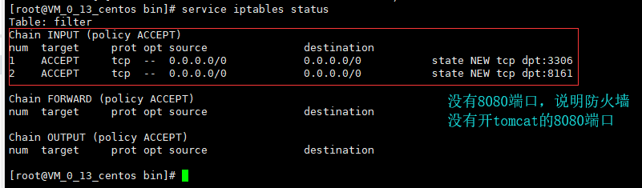
开启的方法是进入到/etc/sysconfig目录下，修改iptables文件如下：
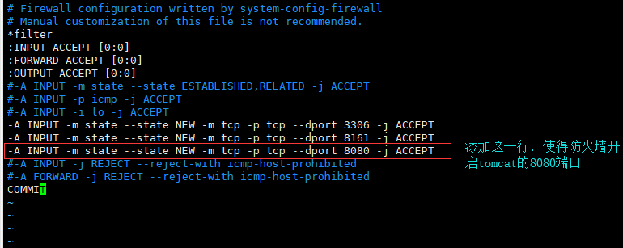
通过命令service iptables restart来重启防火墙使得配置生效
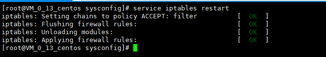
再次通过service iptables status命令来确保8080端口已经开启了
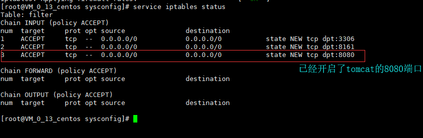
第四步：通过外网访问tomcat来验证tomcat是否已经开启
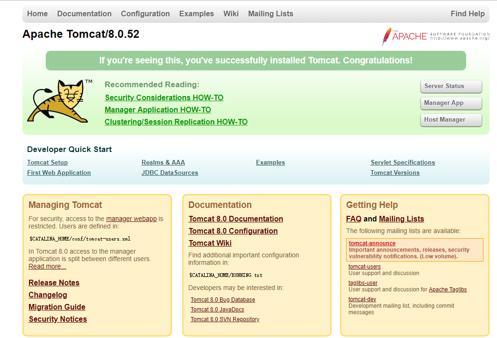
第五步（可选）：将tomcat加入到系统服务中，并设置为开机自启动
首先，将tomcat目录的bin目录下的catalina.sh复制一份到/etc/init.d目录下，并重命名为tomcat
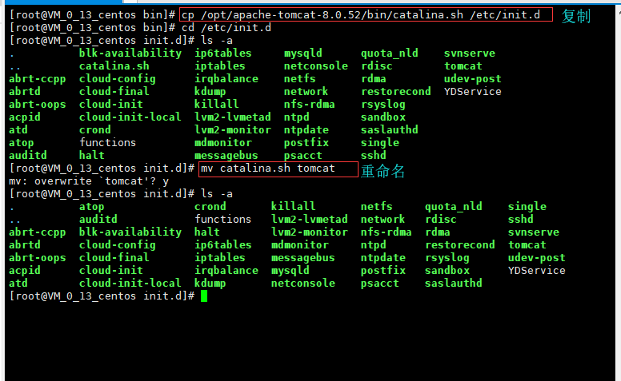
然后，编辑上一步的/etc/init.d目录下的tomcat文件，加入以下两行：
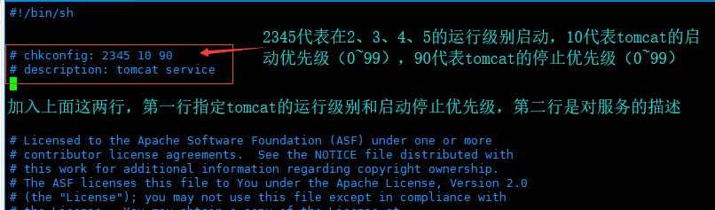
再然后，还是编辑/etc/init.d目录下的tomcat文件，加入CATALINA_HOME和JAVA_HOME
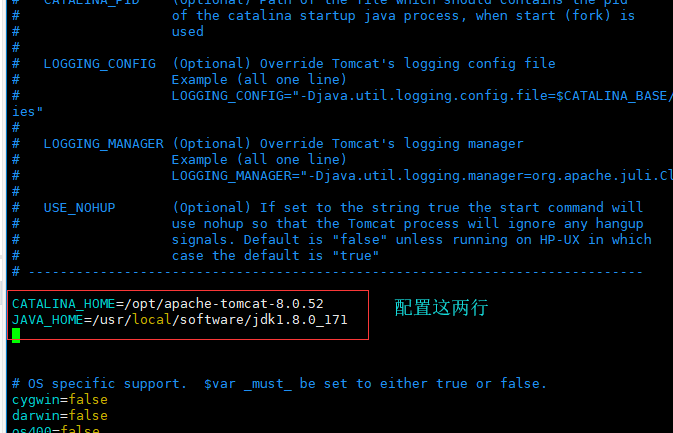
再然后，修改/etc/init.d目录下的tomcat文件的权限
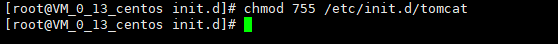
再然后，添加tomcat到系统服务中并设置开机重启
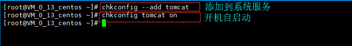
最后，重启服务器（reboot命令）看tomcat是不是已经加入到系统服务中并开机自启动了
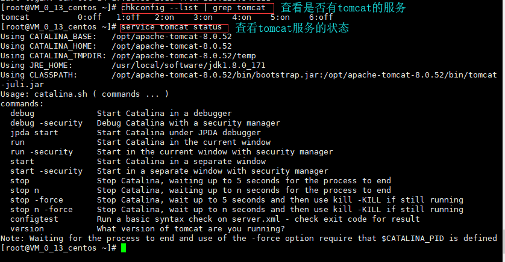